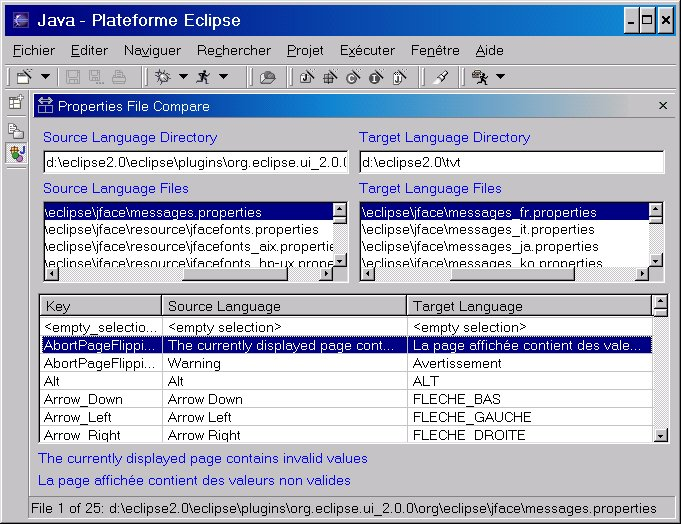

| Eclipse Corner Article |

Summary
This article shows you how to validate your internationalized product and prepares you for the types of common problems you can expect during translation testing. It includes an Eclipse plug-in that defines a Properties File Compare view that can help your translation testers find errors more quickly.By Dan Kehn
IBM Eclipse ISV Enablement (Jumpstart) TeamAugust 23, 2002
Editor's note: This article reflects Eclipse release 2.0.
You followed the internationalization steps outlined in the first article of this series, How to Internationalize your Eclipse Plug-in, then sent your national language (NL) resources (*.properties files, HTML files, icons, etc.) to a translation center. The items are returned and you reintegrated them into your product, but now what? To make all that investment in time and money worthwhile, you must verify that your product works correctly with the translations and that they are semantically correct in the context of actual product usage. This process is known as Translation Verification Testing (TVT).
TVT can be viewed from two aspects: process and technique. The process that you adopt will likely resemble the one that you have already put in place for your product's functional validation. But the particular techniques that you will employ are quite specific and these choices also impact the quality and efficiency of the testing process. This article will outline translation verification techniques and classic errors and will provide a tool that you can download to help your translation testers work more efficiently and effectively.
Ideally, the national language version (NLV) and domestic version of a product are developed and shipped at the same time, with the translation being tested before the domestic version is shipped. This is more likely the case for the second and subsequent release of an NL-enabled product. However, in the case of the first release, the domestic version may be released with the code already NL-enabled, but before the translations are available. This is often unavoidable since the language translation may take weeks or months, depending on the amount of NL material, during which it serves little purpose to delay the release of the domestic version.
Subsequent releases can reduce the delay between domestic and international releases since the bulk of the translation and testing carries forward from the prior release. When planning your validation test cycle, weigh the amount of time and personnel that you expect to invest in proportion to the amount of material that was affected by translations. In general, minor changes in the translation materials are usually isolated risks, unlike functional modifications where one bad line of code can disrupt the stability of the entire system. This allows you to scale down the "version two" and subsequent translation efforts considerably, on the order of two-thirds to one-half your version 1.0 investment.
For best results, your product should be tested in all translated languages using the operating system NL version and representative hardware for the target region. But if you must choose a subset, here are some guidelines on what and how to test your product's NL enablement:
TVT concentrates on detecting:
Note that the scope of this article does not permit the treatment of each of these points in depth, but will cover in detail those that are less apparent.
It is very tempting to concentrate all testing efforts on the NL-enabled version of the product in order to get it shipped with the minimum delay. But corrections introduced into the NL version could impact the domestic version. When deciding whether or not to apply a code correction, determine how crucial it is to the finished product. Your translation testers are aware of the relative negative impact of a translation defect in the context of their culture; use them to help prioritize reported problems. Do not push for a correction that could destabilize the domestic edition, however, do not postpone those that make part of the translated product unusable. Trust your judgment and come up with an "absolutely must fix" list of problems.
All professional function testers have their favorite problem areas on which they concentrate, such as bounds testing, stress testing, and common path testing. This is also the case for the translation test professional, who has mastered the language for which they test and developed a mental list of common problem areas. Most of these apply to all target language translations, but others are specific to a given language, culture, or country. Let's focus on the former, since these points can be addressed without first mastering the target language. They can also be applied early in the verification test phase, that is, before your translation test experts arrive and time and money start to slip away.
 Entering accented characters
Entering accented characters
Windows support for the US-International Keyboard Layout is helpful for
entering accented characters on a QWERTY keyboard (go to Control Panel > Keyboard > Input Locales). It enables so-called "dead key" input of accented characters. For example, typing the single quote + the letter you want to accent will result in that letter with the acute accent ('+e = é, '+a = á, etc.). Similarly, the caret (^) will add the circumflex (â), the left grave accent modifier (`) will add the grave accent (à), and the double-quote (") will add the dieresis (ä).
However, while this enables QWERTY keyboard users to enter accented characters, it does not assure that the equivalent accented key on a "native" keyboard will work. This is true simply because the key scan code sequences will be different in the two cases, permitting the possibility that an input error is not detected on a non-native keyboard. Input errors for double-byte characters are equally problematic. And while Windows does support double-byte character input on a non-DBCS machine, the setup is more intrusive than simply toggling keyboard layouts -- it involves installing DBCS fonts and using multi-stroke key entry.
This type of problem centers around the locale-specific display of data, covered in detail in How to Internationalize your Eclipse Plug-in and the Java Tutorial: Internationalization trail. Developers can test this in advance by changing their regional settings for numbers, currency, time, and dates, then validating that these fields are indeed displayed using the current locale and that input is accepted as expected. Verify that sorted lists are correct, even if they include accented characters. The precise collation order may not be obvious to a non-native and thus will have to wait for native translation testers, but generally you can expect that unaccented characters and their accented counterparts should sort near each other. That is, a failure to use the Collator class or its equivalent for sorting is evident because a binary compare will typically result in the accented equivalent appearing quite far from its counterpart (for example, a = \u0061, á = \u00e8).
The good news is that failures to use Java's locale-sensitive classes are less common than those problems that are listed further on in this article, owing perhaps to the fact that locale-dependent fields are in the minority. Programmers also tend to have a more intuitive appreciation for the nature of NL problems solved by these classes, as opposed to those introduced by the translation process itself. Before moving on to the more subtle testing concerns below, remember to consider input field entry. Verify that you can enter accented characters and that they are not corrupted by codepage transformations (or lack thereof) when re-read from permanent storage. Verify that double-byte characters are not corrupted (split) by non-Unicode aware manipulations.
It is difficult to generalize about the characteristics of this type of problem, but common threads point to the erroneous assumption that the form of NL data adheres to the programmer's native language, or that the data is not NL sensitive at all. Examples include parsing text under the assumption that the separator will be a period or space, or inadvertently using NL data to define or modify character set-sensitive data like database column names without coding appropriate user entry field validation.
Hardcoding a string is surely the "granddaddy" of all TVT errors, outnumbering all others by far. There are two basic approaches to ferreting them out: the black-box approach and the white-box approach. The white-box approach relies on scanning the Java source code, XML, and HTML looking for hardcoded strings. The External Strings wizard of the Eclipse Workbench Java Development Tooling (JDT) automates the Java source code scanning process.
The black-box approach is manually intensive, as it relies on executing testcase scenarios that display all the product's user interface elements (views, menus, dialogs, etc.) on a non-US English workstation to a tester who validates all text is translated.
There is, however, a gray-box approach that falls somewhere in between. It involves translating all the text into an easily recognizable benign string of the same number of characters and words. For example, the information message below:
Import resources from the local file system
becomes
****** ********* **** *** ***** **** ******
If your product test team was wise enough to use an automated test tool, their scripts can be modified to detect the cases where strings are hardcoded and were not detected by the black-box approach. These omissions could be because of untranslated third-party products that your product uses, composed strings, etc. If you don't have the benefit of automated testing, this approach will still simplify manual hardcoded string detection. Furthermore, it has the advantage of requiring no specific language skills. Some testers prefer the "Pig Latin" approach. Our example above would then be:
Importway esourcesray omfray ethay ocallay ilefay ystemsay
This has the advantage of retaining some level of readability while making it equally clear what text has not been translated.
The gray-box approach is perhaps the most rigorous method to validate that all strings have been translated. But it also is helpful in detecting that there are not any inadvertent translations. Consider, for example, an extract of the properties file org.eclipse.jdt.internal.formatter\options.properties below:
|
Translating all the apparent user text to asterisks would include the key and value below:
|
While this may not cause a run-time bug per se, it is not evident that these values actually represent the key used to persist the user's preference (in other words, "Reuse|Do not reuse" are never displayed to the end user). If the translator unknowingly translated two terms that are different in English into the same word in their target language, it is possible that changing one preference would overwrite an unrelated preference.
That is the risk of mixing the use of properties files for translatable text and run-time parameterization. This is certainly a valid programming technique, but it requires that the translator be aware of it, at a minimum by adding comments to the properties files itself. Better still, use values that are clearly programmatic. Returning to our example:
|
Here it is obvious to both the translator and their translation tools that the values after the equal sign should not be modified.
The average text expansion of English to several European languages is around 40%. Consider these examples. First, one English word translated to two German words:
Restart -> Neu starten
Not a problem, an expansion of seven characters to eleven. But here's a surprise. Two English words translated to one (long) German word:
Counter Logs -> Leistungsindikatorenprotokolle
Ouch, an expansion of 12 characters to 30! While the German language is well recognized for text expansion relative to English, it is not the only one. Consider the Acadamie Française's official French language equivalent of "air bag": coussin gonflable de sécurité. To address this in development before a translation is available, you can modify the text of your properties files to double their lengths. To make it obvious that this is a testcase, a simple script can double each word. Taking our example from above once again:
Import import resources resources from from the the local local file file system system
Now rerun your application and verify that the page layouts are still appropriate, that text is not truncated, etc. If a page is resizable, resize it from each of the four corners. Recognize that even this test has a weakness, since it assumes that phrases will include spaces and can word wrap; this is not true for some non-Latin character based languages.
For those cases where the layout demands that the translated text be minimal, document the limit in the original language file. For example, adding a comment:
|
Here the translator is alerted to the fact that verbosity is not allowed. The testcase reference will allow the translation tester to validate that the text is not truncated, because the choice of letters affects the final text width in proportional fonts. Translators may also need the ability to specify layout constraints, such as a column width in a table, especially those that are not resizable:
|
Here the translator or translation tester can provide an optimal size without resorting to unnaturally terse translations, while taking into consideration the default fonts associated with the language and operating system.
Note: Text truncation implies the inability to access the complete text, even employing alternative user interface mechanisms like scrolling, displaying another dialog, or providing a "More >>" button. Clearly text truncation with no means to visualize it is more serious than simply requiring that the user scroll the viewing area. For these reasons and for reasons of accessibility, avoid creating text areas that cannot scroll or wrap.
Font pixel size for different operating systems and languages can change in both height and width. The majority of these cases are handled by the base widgets; for example, a text field will resize automatically to accommodate a larger font, or autoscroll if necessary. But if you draw your own graphics and text, the appropriate system metrics must be queried in order to avoid arbitrary text truncation.
This is especially true for double-byte language fonts, where the minimum height is generally larger than that of single-byte language fonts. As an aside, handling font size changes is not required for Section 508 accessibility compliance, but it is surely appreciated by those that wish to choose a larger font because of a visual impairment. You can perform a quick test on Windows by increasing the size of the default font and restarting your machine (Display > Settings > Advanced > General > Font Size > Large Fonts). You will be surprised how many of the applications you use everyday fail this simple test. Don't follow their example!
One aspect that directly impacts the quality of these translations is the clarity of the context. This is readily apparent when translating property files:
|
This example is fictitious, but it demonstrates the point. What is the context in which this message is displayed? The first parameter could be the date and the second the time. But maybe the first is a resource and the second is the URL of the server where it was stored. Without a comment to indicate, the translator will simply translate it literally to the most likely choice.
Here is an actual example from the Eclipse Workbench:
|
In this context, "on" means "when a resource is modified." This may be clear to a Workbench user, but the first translation is done by a central organization without specific product knowledge. Since "resource modification" means little to them, "on" could be interpreted literally, as in, "on top of," or quite narrowly in a programmatic sense, as in, "as a super task."
Consider adding notes to the property files so translators will know the context of a given message. It is especially important in those cases where the subject is implied, since many languages must explicitly know the subject in order to choose the appropriate adjective and verb forms. Here are a few messages from the JDT that are displayed as markers within the Java source code editor, augmented with example translator-friendly comments:
|
Nobody expects a developer writing such a message to be aware of the subtle interpretations of a phrase. The examples above demonstrate that even given the developer's best efforts, there is no substitute for translation testing.
In addition to performing the TVT on the running version of the translated product, you can use the Property Files Compare view to speed up the testing cycle and detect common errors, resulting in a higher quality NL version of your product.
Briefly, the objectives of the tool are two-fold:
Remember there is a gap of time between the moment the original source language files were sent for translation and the time TVT started. It is during this period that the code -- as well as some of the original source language files -- could have changed. New keywords may have been added to them that are not in the translation, resulting in a run-time error.
To resolve this situation, use this view to compare side-by-side the source language files against their corresponding translated files. The tool flags missing keywords and gives you a chance to correct the files.
It is both costly and time-consuming to enable your product to the world market. But if worldwide software sales are any indicator, ignoring this requirement carries its own costs. With the how-to presented in the first article of this series and the testing hints and tools in this one, you should be on your way to présenter votre produit en n'importe quelle langue comme si c'était sa langue maternelle (presenting your product in any language as if it were its native language)!
Translation verification testing involves a language expert actually executing the product in order to correct the previously discussed translation errors. This process is time consuming, sometimes tedious, and error prone. As a means to alleviate some of these costs, improve productivity, and increase the quality of the final result, I wrote a simple view that displays two property files side-by-side, using run-time formatting and parameter substitution. This enables the language expert to quickly validate the initial translation and see the messages formatted in the same fashion as in the running product itself. Download the code for this tool.
More precisely, here are the problems that the Property Files Compare tool addresses:
Once its plug-in is installed, open it by selecting Perspectives > Show View > Java > Properties Files Compare. Then enter the name of the directories containing your source and target languages; pressing Enter while the Source Language Directory or Target Language Directory field has the focus will start a search for all *.properties files. Selecting one of the property files on the left will attempt to auto-select its corresponding target on the right by matching the same partial file specification, starting at the last occurrence of "eclipse" in the directory path.
Figure 1. Properties file comparison view

For example, if the Eclipse Workbench is installed in x:\eclipse2.0, the Eclipse install root is a subdirectory directly beneath it called, unsurprisingly, eclipse. The view assumes that you (a) maintain native language property files in separate subdirectory trees by language, or that (b) the original language (source) files have no country suffix and the target files have a suffix based on the country code returned by the operating system. For example:
|
So entering x:\english in the first directory field and pressing
Enter will initiate a search starting from
the English subdirectory. Entering x:\french in the second directory field will initiate a search starting from the French subdirectory. Selecting a properties file found in the list of Source Language list will automatically select the corresponding file in the Target Language list, and display their contents sorted by key.
Note: Another tool, called RBManager, is available on IBM's alphaWorks site. According to the description there, "RBManager (Resource Bundle Manager) is a tool that automates many of the tedious tasks associated with creating, updating, and managing resource bundle files; it also prevents most common mistakes from being propagated across bundles. This tool is helpful for development teams working on internationalized applications and Web-based services."
RBManager doesn't include a side-by-side property files view (yet?), however it definitely helps manage the many resource files that are typically involved in a translation. RBManager includes good documentation and a tutorial.
How you plan to format your property file messages has an impact on the way that single quotes should be entered, that is, are they doubled or entered only once. To illustrate the problem, consider the code below:
|
The output is below:
This is a 'beta' program and it's not ready for production.
|
The fourth line ( ) is particularly
troubling, because not only is the apostrophe missing, but so is the substitution
parameter! These differences stem from the fact that MessageFormat
expects a quote to be entered twice if it is to be included in the result. No
problem, but what if some programmers use MessageFormat, some write their own
version for parameter substitution, and others don't use it at all unless there
are substitution parameters? The translator obviously does not know what code
will manipulate the translated text, so they must know how to enter required
single quotes / apostrophes.
) is particularly
troubling, because not only is the apostrophe missing, but so is the substitution
parameter! These differences stem from the fact that MessageFormat
expects a quote to be entered twice if it is to be included in the result. No
problem, but what if some programmers use MessageFormat, some write their own
version for parameter substitution, and others don't use it at all unless there
are substitution parameters? The translator obviously does not know what code
will manipulate the translated text, so they must know how to enter required
single quotes / apostrophes.
Here are the conventions that were adopted for required quotes during the Eclipse Workbench version 1.0 TVT:
This is in acceptance of the observation that practically all programmers used MessageFormat only for those cases where there were substitution parameters. To avoid this programming inconsistency, version 2.0 of the Eclipse JDT includes an Externalize Strings wizard to help centralize message retrieval and parameter substitution. Consider adopting this strategy, or systematically using MessageFormat so your translators will only have one rule for required quotes.
Dan Kehn is a Senior Software Engineer at IBM in Research Triangle Park, North Carolina. His interests in object-oriented programming go back to 1985, long before it enjoyed the acceptance it has today. He has a broad range of software experience, having worked on development tools like VisualAge for Smalltalk, operating system performance and memory analysis, and user interface design. Dan worked as a consultant for object-oriented development projects throughout the U.S. as well as four years in Europe. His recent interests include object-oriented analysis/design, programming tools, and Web programming with the WebSphere Application Server. Last year he joined the Eclipse Jumpstart team, whose primary goal is to help ISVs to create commercial offerings based on the Eclipse Platform. In another life, Dan authored several articles about diverse Smalltalk topics like meta-programming, team development, and memory analysis. You can find them on Eye on SmallTalk.